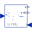

SignalCurrentGeneric current source using the input signal as source current |
Information
This information is part of the Modelica Standard Library maintained by the Modelica Association.
The signal current source is a parameterless converter of real valued signals into a the source current. No further effects are modeled. The real valued signal has to be provided by components of the blocks library. It can be regarded as the "Opposite" of a current sensor.
Connectors (3)
| p |
Type: PositivePin |
|
|---|---|---|
| n |
Type: NegativePin |
|
| i |
Type: RealInput Description: Current flowing from pin p to pin n as input signal |
Used in Examples (2)
|
Modelica.Electrical.Analog.Examples
B6 diode bridge |
|
|
Modelica.Electrical.Analog.Examples
Example to demonstrate variants to generate FMUs (Functional Mock-up Units) |
Used in Components (3)
|  |
Modelica.Electrical.Analog.Examples.Utilities
Input/output block of a direct capacitor model |
|
Modelica.Electrical.Machines.Examples.ControlledDCDrives.Utilities
Ideal DC-DC inverter |
|
|
Modelica.Electrical.MultiPhase.Sources
Multiphase signal current source |